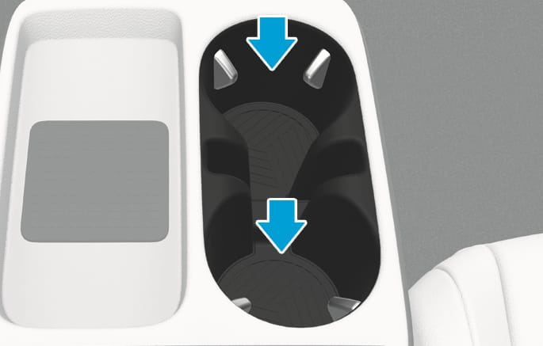
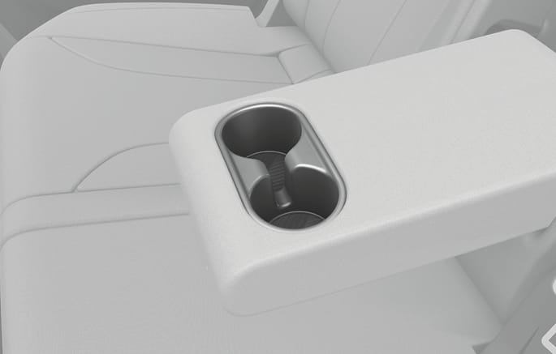

컵 홀더
-
차량이 움직이는 동안 컵 홀더에 액체가 담긴 컵을 고정하지 마십시오.
-
뜨거운 액체가 담긴 컵을 뚜껑 없이 고정하는 것은 특히 위험합니다.
-
뜨거운 액체가 갑자기 쏟아지면 탑승자가 화상을 입을 수 있으며, 운전자의 주의가 분산되어 심각한 사고가 발생할 수 있습니다.
-
-
급정차 시 또는 충돌 사고 발생 시의 위험을 방지하기 위해, 컵 홀더에 유리병, 유리잔, 캔 등을 고정하지 마십시오.
-
캔, 병 등 밀폐된 용기를 직사광선에 노출시키거나 뜨거운 차량 내부에 보관하지 마십시오. 용기가 폭발할 수 있습니다.
-
컵 홀더에 음료수와 같은 액체가 담긴 컵이나 캔 등을 고정하지 말고, 컵이나 캔의 뚜껑을 닫아 보관하십시오.
-
급제동 시 컵이나 캔이 넘어져 차량 내부의 틈새로 액체가 쏟아지는 경우, 차량에 전기적 장애가 발생하거나 내부의 전기 장치가 손상될 수 있습니다.
-
-
크기가 맞지 않는 컵이나 캔 등을 컵 홀더에 고정하지 마십시오. 컵 홀더가 손상될 수 있으며, 음료가 쏟아져 차량 내부가 오염되거나 전기 장치가 손상될 수도 있습니다.
-
컵 홀더 위에 동전, 카드, 명함 등 작은 물건을 올려 두지 마십시오. 컵 홀더 사용 시 바닥으로 떨어지거나 장치 내부로 들어갈 수 있습니다.

2C_CupHolderCenterConsole
음료수 컵을 고정할 때 사용하십시오.

2C_RearSeatCupHolder
뒷좌석 암레스트를 내린 후 컵이나 작은 음료수 캔을 고정하십시오.
뒷좌석 컵 홀더를 사용하는 중 암레스트를 접거나 좌석을 조절하지 마십시오. 컵 홀더가 손상되거나 컵 안의 내용물이 쏟아질 수 있습니다.